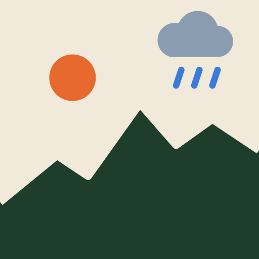

Keine Route geladen
Demo: Regen simuliert
kalt warm Regen Gegenwind Rückenwind Seitenwind Zelle antippen: Werte · Zeilen-/Spaltenkopf: Pause

Exportiere eine Route aus komoot als GPX, kopiere den Inhalt und füge ihn hier ein.
Die Zwischenablage konnte nicht direkt gelesen werden. Füge den GPX-Inhalt hier ein (lange tippen › Einsetzen).